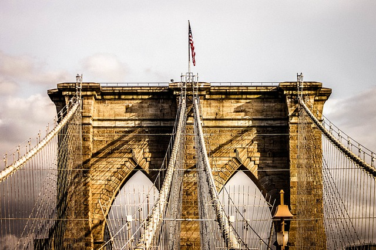
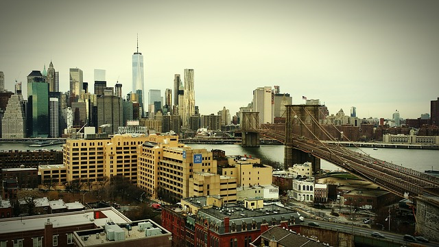
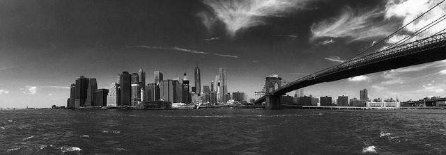

New York City’s skyline is composed of more than its skyscrapers. The city has some of the most gorgeous bridges in the country. They are just as iconic, historic, varied, and awe-inspiring as the city’s skyscrapers. These bridges are more than just functional. One that has attracted many tourists and locals alike is the Brooklyn Bridge.
Many a tourist and local alike have traveled the span of the Brooklyn Bridge. The Brooklyn Bridge is one of the oldest bridges in the country and demonstrates neo-Gothic features with its pointed arches on its stone towers. Its elevated pedestrian walkway has a bike path and is wheelchair accessible. However, depending on the time of day, but especially in the summer, the pathway is extremely crowded with visitors. Nevertheless, the views are worth seeing. Not only do visitors catch a beautiful New York skyline, but also wonderful views of Brooklyn and the Statue of Liberty.
 The Manhattan-side entrance of the bridge is located at Park Row and Centre Street, across from City Hall Park and east of City Hall. The entrance on the Brooklyn side of the bridge is at Cadman Plaza East, or where Boerum Place meets Tillary Street. The walk is just over one mile long and generally takes about 30 minutes to complete.
For those who like to learn, there are engraved plaques detailing the construction of the bridge step-by-step on the tower by the Manhattan side. By the Brooklyn tower, there are plaques detailing sights along the Manhattan skyline. No matter which side is the start, there are plenty of other attractions on both ends to explore.
If that is not enough about urban transportation for you, try checking out the New York Transit Museum. The museum is located on the corner of Boerum Place and Schermerhorn Street in Brooklyn, near many other New York City attractions, like Brooklyn Bridge Park and the Brooklyn Academy of Music. This museum is inside a decommissioned subway station and has a few vintage train cars for visitors to walk through and explore. Its hours are from 10-4pm, Tuesday to Friday and 11am-5pm, Saturday and Sunday. General admission to this museum for an adult is $10 and for children ages 2-17 is $5.
Emily Roebling, the wife of Washington Roebling (who took over as chief engineer after his father and the bridge’s creator, John Roebling, died), was the first person to ride over the completed bridge. She rode with a rooster, a symbol of victory, in her lap.
The bridge’s former names include the New York and Brooklyn Bridge and the East River Bridge, all for fairly obvious reasons.
In order to fund the bridge, the city rented out large vaults under the bridge on the Manhattan anchorage side. The vaults housed wine and was known as the “Blue Grotto” due to a shrine of the Virgin Mary next to its entrance.
In 1883, the Brooklyn Bridge was the only land passage between Manhattan and Brooklyn.